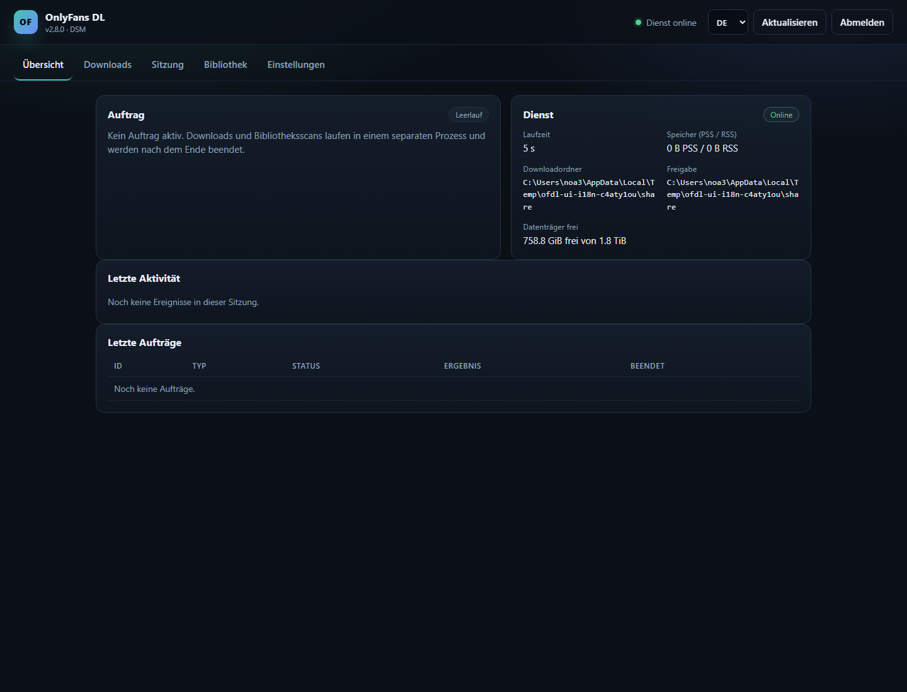

Deine Bibliothek, direkt auf dem NAS.
Ein natives DSM-7.2-Paket für den OnlyFans-Downloader. Es installiert eine private Python-3.13-Laufzeit und startet eine kleine Weboberfläche auf dem NAS. Downloads, Abonnementscans und Vorschauen laufen in einem separaten, kurzlebigen Worker-Prozess.
Was das Paket bietet
Natives Paket
Installation über Package Center. Für den normalen Betrieb sind keine manuellen Python-, pip- oder SSH-Schritte nötig.
Kleiner Steuerdienst
Der dauerhafte Dienst nutzt nur die Standardbibliothek. Die schweren Bibliotheken lädt ausschließlich der kurzlebige Worker.
Weboberfläche
Sitzungsimport und -test, Ordnerauswahl, Creator-Auswahl, Downloads, Pause/Abbruch, Zeitplan und Status.
Bestehende Bibliothek
Verwendet Dateien, Ordnerstruktur, .part-Dateien und das vorhandene .ofdl.sqlite3-Manifest weiter.

Installation
- SynoCommunity-Quelle hinzufügen.
Package Center → Einstellungen → Paketquellen →https://packages.synocommunity.com/ - SPK installieren.
Package Center → Manuell installieren. Python 3.13 wird als Abhängigkeit installiert. - Web-Passwort festlegen.
Der Installationsdialog fragt nach einem Passwort. Danach über das DSM-Menü oderhttp://<NAS-IP>:8765/öffnen. - Ordner wählen und Sitzung importieren.
Die FreigabenOnlyFansDLundOnlyFanswerden für das Dienstkonto vorbereitet.
Sicherheitsmodell
Das Paket läuft als unprivilegiertes DSM-Dienstkonto sc-onlyfansdl.
Es fordert weder root noch eine Mitgliedschaft in der Administratorgruppe an. Die Weboberfläche
hat ein eigenes Passwort und ist nicht DSM-SSO. Die Sitzungsdatei liegt mit Modus 0600
und wird nie in Einstellungen oder Protokollen abgelegt.
Für den Zugriff von außen den HTTPS-Reverse-Proxy von DSM vor Port 8765 setzen. Den Port nicht direkt ins Internet freigeben.
Speicher und Kompatibilität
Bibliothek
OnlyFansDL/OnlyFans oder eine bestehende Freigabe OnlyFans wählen. Dateien und SQLite-Manifest bleiben an ihrem Platz.
Speicher
Der Steuerdienst bleibt klein. Der Worker beendet sich nach jedem Auftrag. Das PSS-Ziel von 50 MiB im Leerlauf wird auf der DS723+ gemessen.
Zeitplan
Eine tägliche Uhrzeit kann die gespeicherten Download-Einstellungen starten. Es läuft nie mehr als ein Auftrag gleichzeitig.
Sprache
Die Weboberfläche wechselt zwischen Deutsch und Englisch. Technische Servermeldungen können deutsch bleiben.
Dokumentation
README
Überblick, Installation und Release-Hinweise.
Architektur
Steuerdienst, Worker, SQLite-Aufträge und Berechtigungen.
Testbericht
Lokale Ergebnisse und DSM-Hardware-Checkliste.
Sicherheit
Sitzungsablage, Exposition und Zurücksetzen.